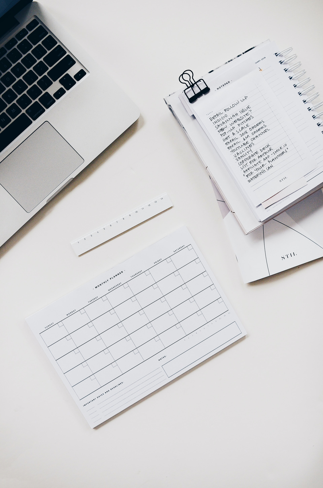

My Learning Plan
What is my long term goal?
My long term goal is to be in a job that I enjoy and have a stable income.I believe that the tech industry is where I need to be to realise my long term goal. For the moment, I plan to learn as much as I can in the field of web development and see where that takes me. Hopefully I get to learn more about my options along the way and I will be able to answer this question better in four months time.
A description of my strengths and limitations in relation to learning
I like to think that I am a relatively quick learner. I am able to pick up new concepts at a decent pace, I feel that this will be helpful for a career in software development. The field which will always be advancing into the future. Adaptability will be a very helpful attribute to have in the industry.
I am however terrible at writing and coming up with contents to put on the blog is another complexity on its own. So I am hoping that through this course, I do pick up some writing skills from all the blogs I will be putting up.
What skills would I like to see developed in myself while at EDA?
If there is a possibility of having better communication skills I would love to be able to develop those. I do not have a problem talking to people in general but when I feel nervous or under pressure, I have the tendency to “ramble on” after the point. Sometimes I am aware of it but at that point I usually cannot stop myself from “rambling on”.


My plan to manage the workload throughout this programme:
How will I work productively and safely with other learners, facilitators and industry/community representatives
I will be keeping a course schedule as well as a personal schedule to make sure I have dedicated time to study after log off. As for working with others safely, I think mutual respect is a very important aspect of any team. With the mutual respect of peer to peer or student to teacher, it makes a much better learning and team working environment.
My plan for when things are building up and starting to get to me
I have experienced stress from tertiary study and it can be overwhelming. I have a way to deal with the mental stress itself which is meditation and going for walks or doing some bag work that usually make me too tired to stress.
As for the work building up itself, I will have to allocate more time in my personal schedule to catch up. Sometimes it can almost seem like there aren't enough hours in the day but I will decrease the down time I spend on my phone so I can have more up time to do productive work.
A commitment as to how and where you will seek help in a timely way
If I become stuck during my time studying, and cannot figure it out myself. I will post my question in foundation chat in Slack or directly message a facilitator to clear up my confusion or to show me how to fix it. I will try and be as clear as possible when it comes to my issue or what I am struggling on.
My expectations for the facilitating team
I’m not sure what problems I will be coming across yet so I cannot say for a fact about what I will need from the facilitators. What I know is, I need a clear instruction and learning path (when to do what). As far as I am concerned, if I receive clear instructions and a learning path, I should be able to find my way.